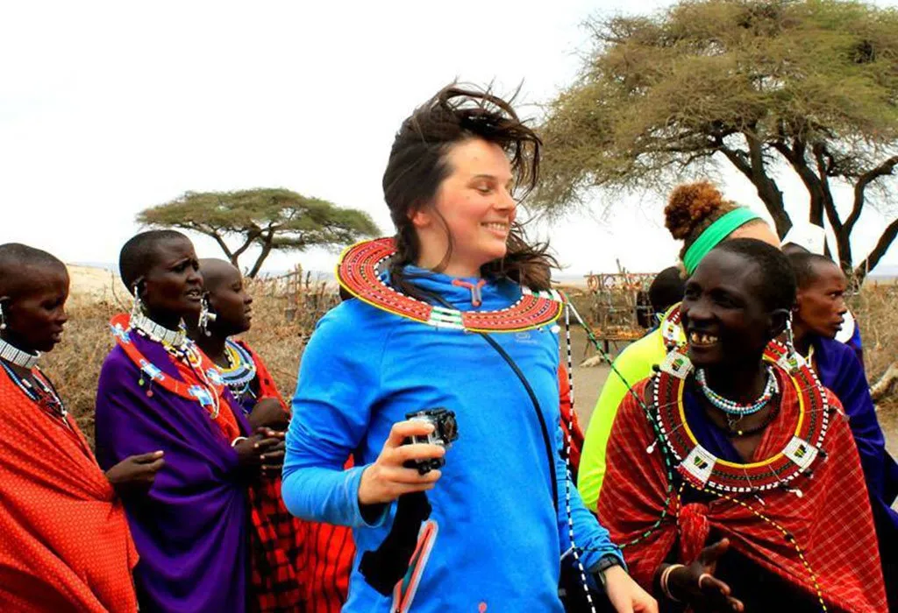
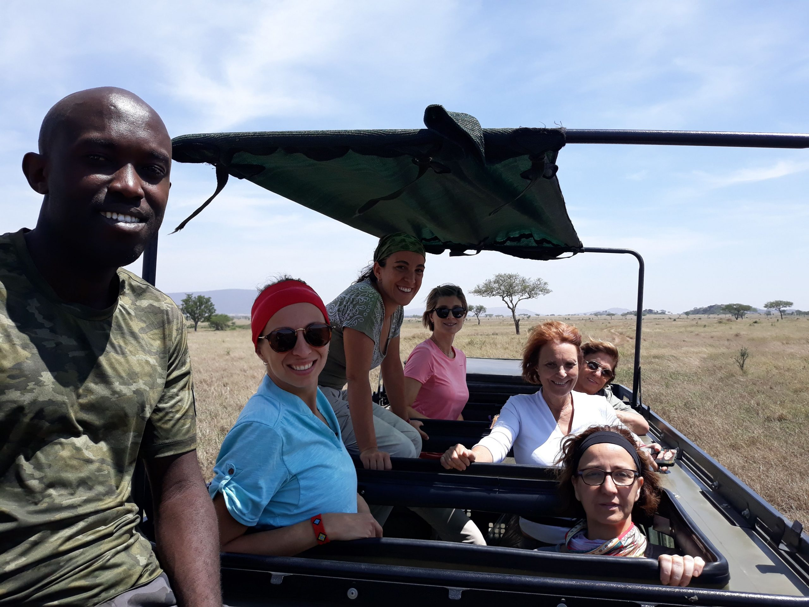
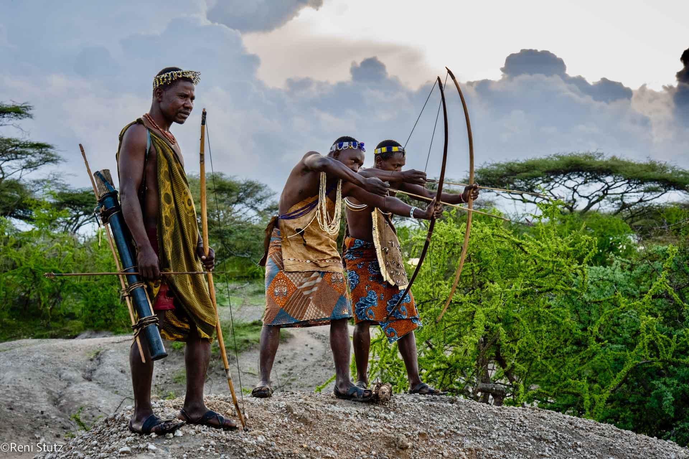

Discover the Adventure

Cultural Safari Camps
Immerse yourself in the rich heritage of Africa’s diverse cultures while enjoying the beauty of the wild.

Wildlife Treks
Witness the incredible landscapes and unique wildlife as you embark on life-changing treks across Africa’s most famous trails.

Memories Captured
Capture every magical moment with our expert guides ensuring you get the best view of Africa’s hidden gems.

Culture & Community
Explore the traditions of Africa’s communities and immerse yourself in their fascinating way of life during your travels.